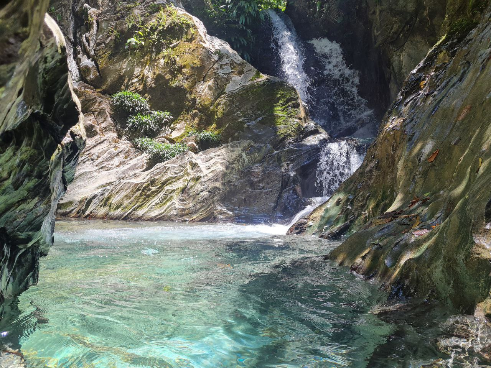
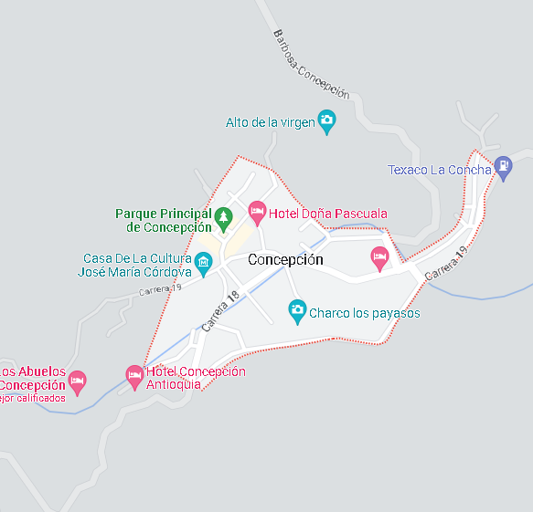
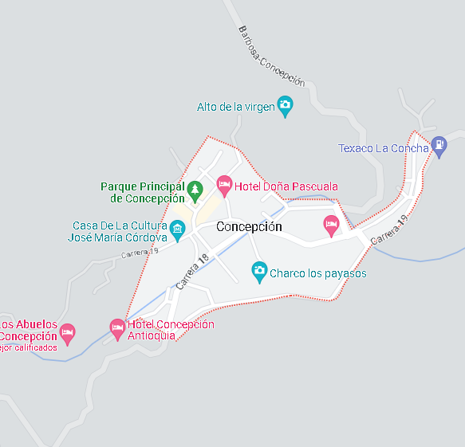

San Carlos is a one hour drive from San Rafael, it can be done off or on road. Up to three waterfalls can be seen during the tour. (The guide's personal favorite)Total driving time from SanRafael: about 2h30,up to 3 people, 1 day
650cop

Puerto Garza is located at about 2h away from San Carlos and San Rafael. The tour will be mostly offroad. A boat ride(1h each way) will lead us to a hidden jungle paradise for lunch. One (heavenly) waterfall and some natural caves can be seen during the tour. Total driving time : about 4h30,up to 3 people, 1 day
500cop


San Rafael is about 45min away from Guatape. The tour mostly consists of regular roads. Some walking and river crossing will be required to access the most beautiful waterfalls. Up to 2 waterfalls and a nature pool can be seen during the tour. (As there are much more and you want to see one in particular this could also be arranged)Total driving time: about 1h,up to 3 people, 1 day
650cop
 

Concepción is located at about 1h30 from San Rafael. This tour will lead US through the town of Alejandría and will consist of 90% of offroad. On the way back (if the weather allows) we can witness Guatape's Peñol from the mountains, a breathtaking view. Only one waterfall will be visited during the tour. Total driving time : about 4h,up to 3 people, 1 day